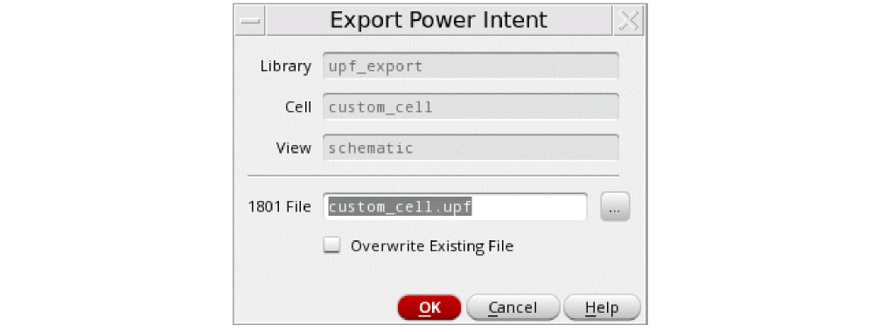

Exporting 1801 Design Model
You can export the power intent specified for your design to a 1801 design model file. To export power intent from a design:
- Open the design in Power Manager.
- Prepare the setup for automatic extraction. For more details about how to prepare the setup, refer to Setup Preparation for Automatic Extraction of Power Intent. Load the setup from Power Manager toolbar/menu.
- Click Power Manager – Extract from Design.
-
Click Power Manager – Export from Design.
The Export Power Intent form appears. The library, cell, and view names of the cell that is currently open are displayed by default in the form.
 - In the 1801 File field, specify the path and the name of file for exporting the power intent.
- Select the Overwrite Existing File check box to overwrite the file.
- Click OK.
The vpmExportPowerIntent SKILL function has been provided to export the 1801 Design Model information for a cellview.
In 1801 design model, the power intent of the sub-blocks is exported along with power intent of the top design. For a pure schematic-based design, the Power Manager always extracts a flat 1801.
An example of an exported 1801 design model file is shown below:
set_design_attributes -attribute top_ports_have_anon_supply 0
##### Supply Ports (Section 1)###################################################
create_supply_port VDD -direction inout
create_supply_port VDDA -direction inout
create_supply_port VDDSW -direction inout
create_supply_port VSS -direction inout
##### Supply Nets (Section 2)####################################################
create_supply_net VDD -resolve parallel
create_supply_net VDDA -resolve parallel
create_supply_net VDDSW -resolve parallel
create_supply_net VSS -resolve parallel
##### Supply Net Connections (Section 3)##########################################
connect_supply_net VDD -ports { VDD }
connect_supply_net VDDA -ports { VDDA }
connect_supply_net VDDSW -ports { I3/I0/VDD }
connect_supply_net VSS -ports { VSS }
##### Supply Sets (Section 4)####################################################
create_supply_set SS_VDDA_VSS -function { power VDDA } -function { ground VSS }
create_supply_set SS_VDDSW_VSS -function { power VDDSW } -function { ground VSS }
create_supply_set SS_VDD_VSS -function { power VDD } -function { ground VSS }
##### Power Domains (Section 5)##################################################
create_power_domain PD_TOP -include_scope -supply { primary SS_VDD_VSS } \
-supply { extra_supplies_1 SS_VDDSW_VSS }
create_power_domain PD_LS -elements { I0 } -supply { primary SS_VDDA_VSS } \
-supply { extra_supplies_1 SS_VDD_VSS }
###### Standard Cells (Section 6)#############################################
connect_supply_net VDD -ports { I0/I20/I0/VDD }
connect_supply_net VDDSW -ports { I3/I1/VDD }
###### Special Cells ###################################
connect_supply_net VDD -ports { I0/I22/ExtVDD }
connect_supply_net VDDSW -ports { I3/I0/VDD }
###### Macro Cells ####################################
connect_supply_net VDD -ports { I2/VDD_ext }
connect_supply_net VSS -ports { I2/VSS_ext }
##### Port Attributes (Section 7)############################################
set_port_attributes -port en_iso -receiver_supply SS_VDD_VSS
set_port_attributes -port in1 -receiver_supply SS_VDD_VSS
######### Isolation Rules #####################################
set_isolation PD_TOP_ISO_0 -domain PD_TOP -elements { out_iso } -isolation_supply_set SS_VDD_VSS -isolation_signal en_iso -isolation_sense high -location self -clamp_value 0
######### Level Shifter Rules (Section 8)############
set_level_shifter PD_LS_ls_0 -domain PD_LS -elements {I0/out_ls } -input_supply_set SS_VDDA_VSS \ -output_supply_set SS_VDD_VSS -location self -rule both
##### Switch Rules ##################
create_power_switch I3_I0 -output_supply_port { VDD VDDSW } -input_supply_port { ExtVDD VDD } \
-control_port { PSO psw_en } -on_state { on ExtVDD {!PSO} } -off_state { off PSO } -domain PD_TOP
##### Supply Port States (Section 9) ###########################################
add_port_state I3/I0/VDD -state { V110 1.1 } -state { OFF off }
add_port_state VDD -state { V110 1.1 } -state { OFF off }
add_port_state VDDA -state { V130 1.3 } -state { OFF off }
add_port_state VSS -state { OFF 0 }
##### Power State Table (Section 10) ###########################################
create_pst top_pst -supplies [list I3/I0/VDD VDD VDDA VSS ]
add_pst_state State_1 -pst top_pst -state { V110 V110 V130 OFF }
add_pst_state State_2 -pst top_pst -state { OFF V110 V130 OFF }
add_pst_state State_3 -pst top_pst -state { OFF OFF OFF OFF }
The following points explain the different sections of the exported 1801 design model:
-
Section1: The
create_supply_portcommand defines a supply port in the scope of the power domain. These are created for all the top-level supply ports identified. -
Section2: The
create_supply_netcommand creates a supply net in the scope of the power domain. These are created for all the top-level supply nets identified. -
Section3: The
connect_supply_netcommand connects a supply net to the specified ports. These commands are for handling the interface connectivity. The commands are for both the top level as well as for hierarchical interface connectivity. This resolves the connectivity of PG nets from down the hierarchy to the top level PG nets for different blocks. Section6 also performs the same task. -
Section4: The
create_supply_setcommand creates the supply set name within the current scope. This defines the primary and extra supply sets or available supplies associated with the different power domains. -
Section5: The
create_power_domaincommand defines a power domain and the set of instances that are in the extent of the power domain. It may also specify whether the power domain can be partitioned further by the subsequent commands. -
Section6: The
connect_supply_netcommand defines the standard, special, and macro cells. -
Section7: The
set_port_attributescommand specifies the information associated with data ports of instances. The attributes of this command identify a port's related supplies (driver or receiver) and the boundary of a power domain. -
Section8: These commands define the low power strategy (Level Shifters, Isolation, and Power Switch) adopted for the ports on the interface of a power domain. This is required to correct for voltage differences between the driving and receiving supplies of a port or to ensure correct electrical and logical functionality when domains are in different power states.
The correct strategy adopted is also based on the cell type identified while reading the schematic based on their Liberty model or special cell definition file registered in the setup. -
Section9: The
add_port_statecommand adds the state information to a supply port. If the voltage values are specified, the supply net state isFULL_ONand the voltage value is the single nominal value or within the range of min to max. If the supply net state is off, the voltage value is OFF. -
Section10: The
add_pst_statecommand defines the name for a specific state of the supply nets defined for the power state table (PST). This command defines system power states of the IP.
The output supply port that is the output of a power switch, output of a LDO, or voltage regulator can be identified by explicit user registration in the setup. In addition, the output supply port can be identified from the Liberty model or the 1801 file, if available for the block. The commands associated with the output port would appear in Section1, Section2, Section9, and Section10.
A hierarchical internal net is not generated for commands related to Section1, Section2, Section3, and Section6. Any block with internal net (not available at the top) should be extracted and 1801 generated. Then, use the 1801 binding for the top block.
For more information on the 1801 commands, refer to IEEE Standard for Design and Verification of Low-Power Integrated Circuits.
Related Topics
Registering Supply Set and Power Domain
Extracting the Power Intent from a Design
Special Isolation Cells in Liberty Power Model Export
Return to top